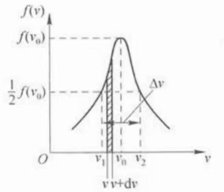

用于描述相对光强在不同频率上的分布.

设某条光谱线总光强为\(I_0\)，频率\(\nu\)附近单位频率间隔\(\mathrm{d}\nu\)内的光强为\(I(\nu)\).
则在频率\(\nu\)附近单位频率间隔\(\mathrm{d}\nu\)内的相对光强为：
$$f(\nu) = I(\nu)/I_0$$\(f(\nu)\)表示某一谱线在单位频率间隔内的相对光强分布，称为光谱线的线型函数.
光谱的线型和宽度与光的时间相干性直接相关.
光谱的线型和宽度对许多激光器的输出特性（激光的增益、模式、功率等）都有影响.
原子发光是有限波列的单频光，因此仍有一定的频带宽度.
有限波列\(\Rightarrow\)有一定带宽
这意味着原子发射的不是恰好为某一频率\(\nu_0\)（满足\(h\nu_0 = E_2 - E_1\)）的光，而是发射频率在\(\nu_0\)附近某段范围内的光.
判定同一条谱线：
同一对能级上发生的辐射跃迁辐射出的光对应同一条谱线
e.g.从\(E_x\)自发辐射与受激辐射到\(E_n\)所发出的光对应同一谱线.
不同谱线的带宽不一定相同.
对于同一个谱线而言，不同频率对应的光强相对强度不一样.
线型函数在\(\nu_0\)处达到最大值，而在\(\nu_1\)及\(\nu_2\)处，有：
$$f(\nu_1) = f(\nu_2) = \frac{1}{2}f(\nu_0)$$定义\(\Delta\nu = \nu_2 - \nu_1\)，即相对光强为最大值\(1/2\)处的频率间隔，为光谱线半宽度.